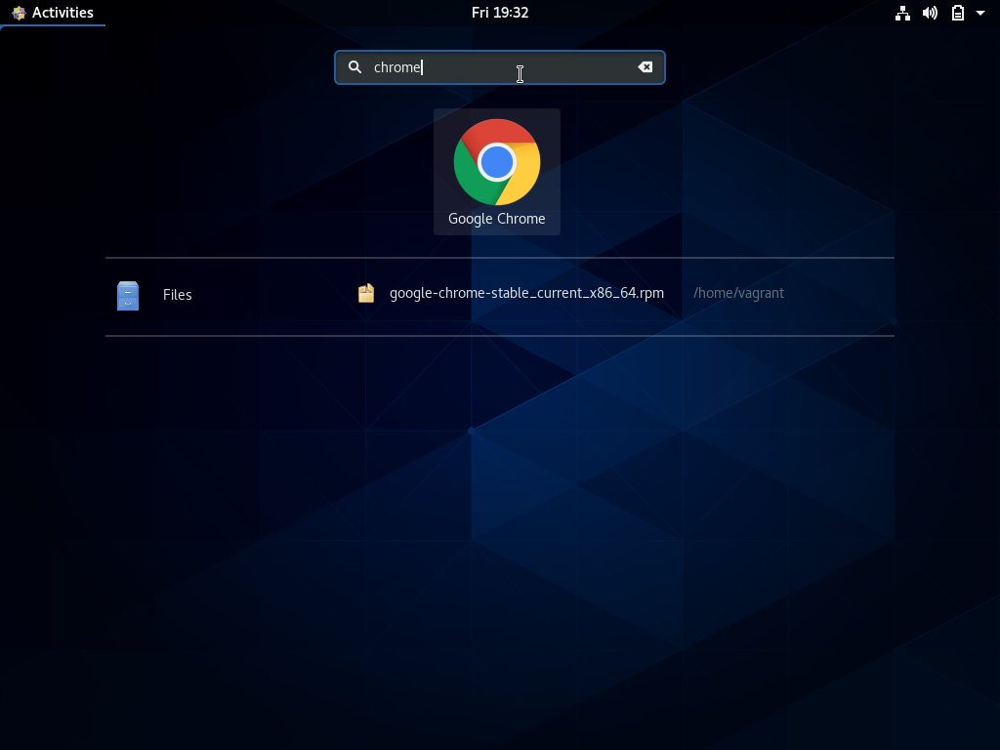
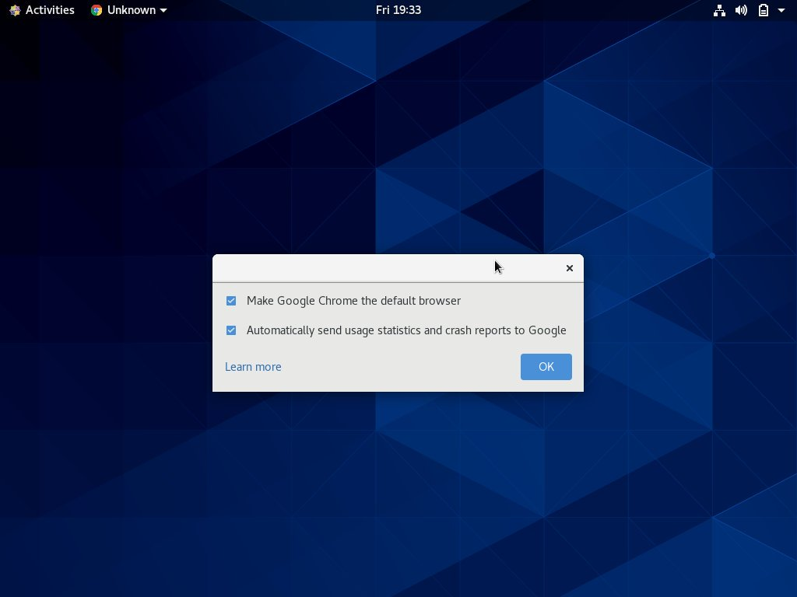
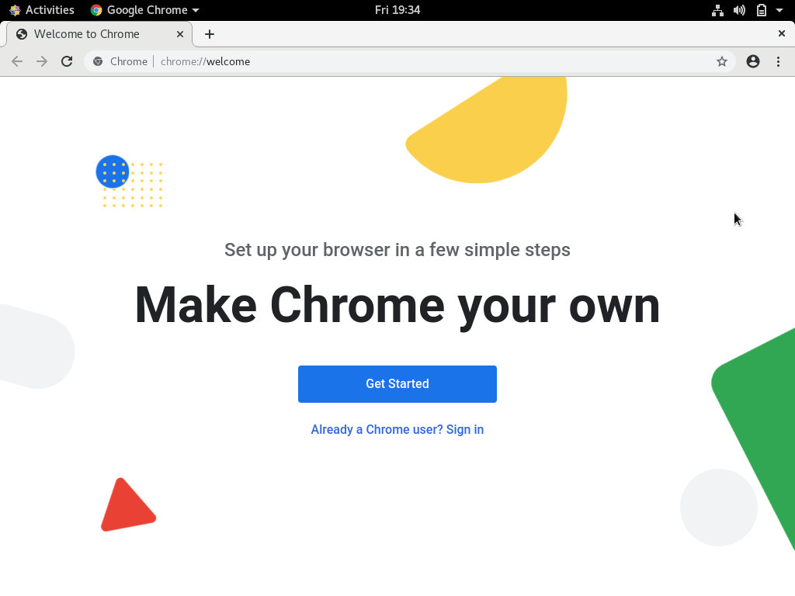

如何在 CentOS 8 上安装 Google Chrome 浏览器
本教程说明了如何在 CentOS 8 上安装 Chrome 浏览器网络浏览器。
Chrome 浏览器是世界上使用最广泛的网络浏览器。它是为现代 Web 构建的快速，易于使用且安全的浏览器。
Chrome 不是开放源代码的浏览器，它也不包含在官方的 CentOS 存储库中。
在 CentOS 8 上安装 Chrome 浏览器
请按照以下步骤在 CentOS 8 上安装 Chrome 浏览器：
-
打开您的终端并使用以下
wget命令下载最新的 Chrome 64 位.rpm程序包：wget https://dl.google.com/linux/direct/google-chrome-stable_current_x86_64.rpm -
下载完成后，以 root 或具有 sudo 特权的用户身份运行以下命令以安装 Chrome 浏览器：
sudo dnf localinstall google-chrome-stable_current_x86_64.rpm出现提示时，输入您的用户密码，安装将继续。
现在，您已经在 CentOS 系统上安装了 Chrome 。
启动 Chrome 浏览器
现在，您的 CentOS 系统上已安装了 Chrome 浏览器，您可以通过在命令行中键入 google-chrome & 或单击 Chrome 图标 (Activities -> Chrome Browser) 来启动它：

首次启动 Chrome 浏览器时，它将询问您是否要将 Chrome 设置为默认浏览器，是否使用情况统计信息和崩溃报告发送给 Google ：

根据您的偏好选择复选框，然后单击 OK 以继续。
Chrome 浏览器打开后，您会看到默认的欢迎页面。

您可以从此处登录 Google 帐户，以同步书签，历史记录，密码，并安装 Chrome 应用和扩展程序。
更新 Chrome 浏览器
在软件包安装过程中，正式的 Google 存储库将添加到您的系统中。使用 cat 命令来验证文件是否存在：
cat /etc/yum.repos.d/google-chrome.repo
[google-chrome]
name=google-chrome
baseurl=http://dl.google.com/linux/chrome/rpm/stable/x86_64
enabled=1
gpgcheck=1
gpgkey=https://dl.google.com/linux/linux_signing_key.pub
发布新版本后，您可以使用桌面标准软件更新工具或通过 dnf 执行更新。
结论
在本教程中，我们向您展示了如何在 CentOS 8 桌面系统上安装 Chrome 浏览器。如果您以前使用过其他浏览器(例如 Firefox 或 Opera) ，则可以将书签和设置导入 Chrome 。